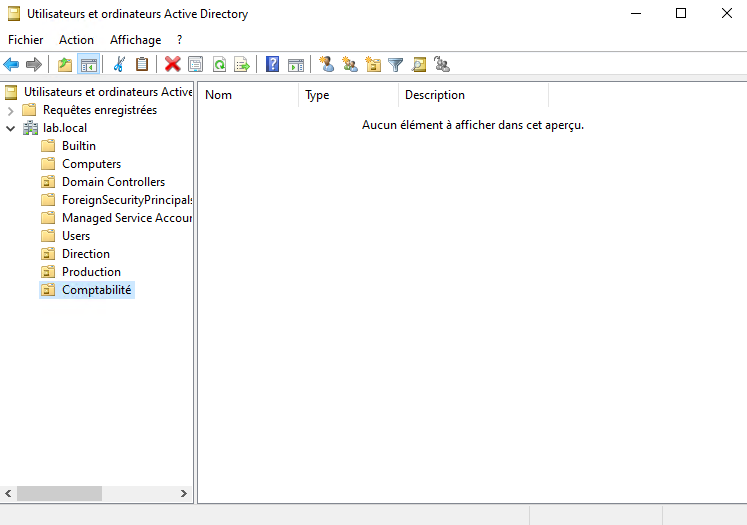
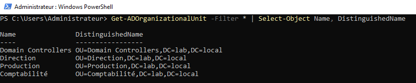

TP05 — Création des OU
Théorie : Cours - Active Directory
Captures :99-Captures/TP05/· Prérequis : TP04-Promotion-DC
Objectif
Structurer l'annuaire Active Directory avec des unités d'organisation adaptées au laboratoire.
Structure cible
lab.local
├── Direction
├── Production
└── Comptabilité
Prérequis
- [v] TP04-Promotion-DC validé
- [v] Accès administrateur au domaine
Étapes
1. Création des OU
Créer les trois OU dans Active Directory Users and Computers.

2. Vérification
Get-ADOrganizationalUnit -Filter * | Select-Object Name, DistinguishedName

Bonnes pratiques
- Structurer par fonction, pas par personne
- Nommer les OU de façon explicite
- Documenter le schéma dans Architecture
Validation
- [v] OU Direction créée
- [v] OU Production créée
- [v] OU Comptabilité créée
Progression
| Étape | Lien |
|---|---|
| Prérequis | TP04-Promotion-DC |
| Suite recommandée | → TP06-Utilisateurs-et-groupes |
| Branches | — |
| Théorie | Cours - Active Directory |
Suivi : Progression